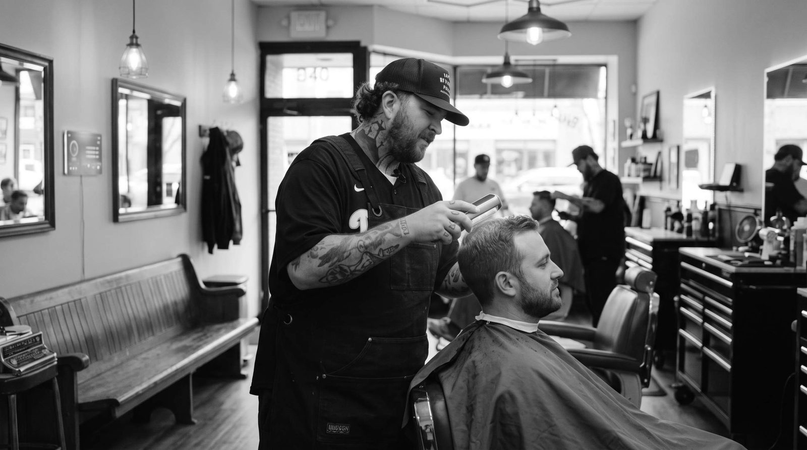
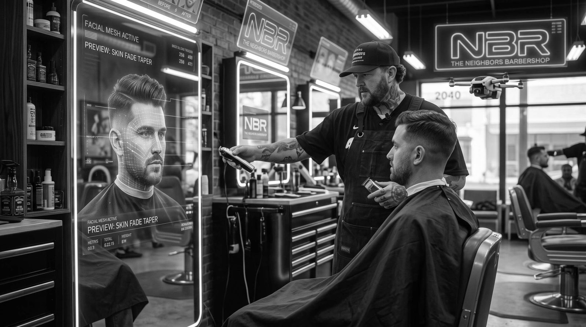
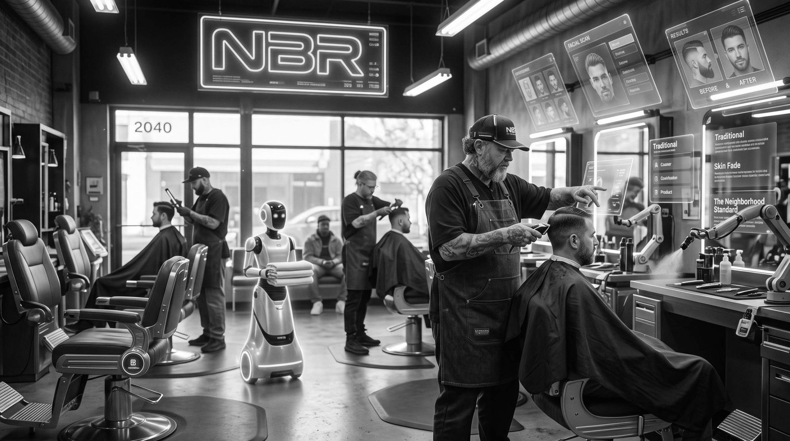
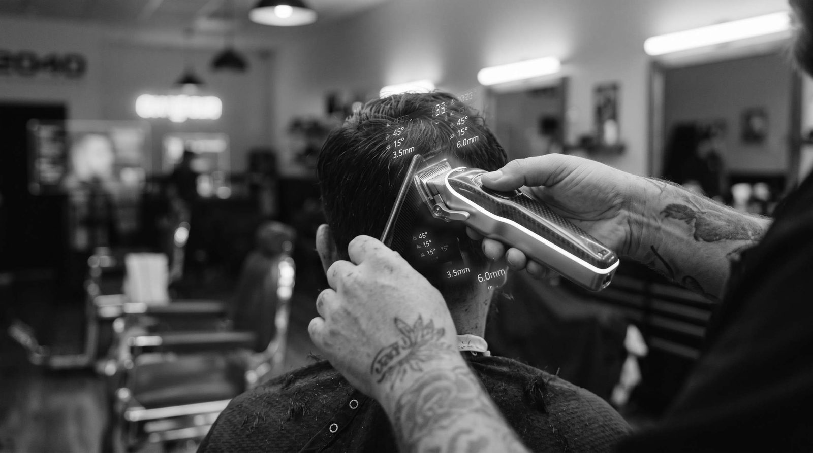

A Neighbors Vision · Spring City, PA
Barbers in the Year 2040
The clippers still hum. The conversation still matters more than the tech. You still leave looking like yourself — only sharper.

You Step Off the Sidewalk
The door recognizes the rhythm of your walk before you reach the handle. Not because a camera is watching. Because the shop has learned the people who belong here.
Inside, the light is the same warm amber it always was. The bench is still the bench. Someone is already talking about last night’s game, or the kid who just learned to ride a bike, or the quiet way the river looks at dusk. No one is staring at a screen. They’re looking at each other.
You sit. The chair knows the exact height you like. The cape settles with a weight that feels familiar. For a moment nothing happens. Then the barber looks at you — really looks — and says your name like they’ve been waiting for this exact conversation.

The Scan That Remembers
A soft pulse of light moves across your scalp. Not a laser. More like the way sunlight finds the edge of a blade. In less than a second the shop knows the density of every follicle, the direction each one grows, the places the last cut left a little too much weight, the places your hair has thinned since the last time you sat here.
It also knows the story you’ve told it over the years. That you started growing your hair out after the wedding. That you asked for a little more length on top the week your father was in the hospital. That you always want the neckline clean but never too high.
None of this is stored in a cloud. It lives in the chair, in the tools, in the hands that have held the same clippers for twenty years. The technology is only a memory made precise. The judgment is still human.
Precision Without the Guess
Every line is mapped to the bone structure underneath. The fade doesn’t “look about right.” It is right — because the tools already know where your head curves and where it doesn’t.
Hair That Learns With You
The formula in the bottle changes with the season, with the stress in your voice, with the minerals in the water you drink. Not because a computer decided. Because the barber noticed, and the shop helped them remember.
The Preview You Can Trust
Before a single hair falls, you see the finished cut in the mirror — not a cartoon, but the exact way light will hit the finished shape when you walk out into the afternoon. If you don’t like it, you say so. The chair adjusts. The plan changes. You stay in control.

The Cut That Still Takes Time
The tools are quieter than they used to be. Some of them don’t even touch your skin until the last pass. But the hands are still hands. They still pause when you start a story. They still adjust the angle because they felt, not because a sensor told them to.
In 2040 the best barbers are not the ones with the most sensors. They are the ones who know when to ignore the data. The ones who can hear the difference between “I want something new” and “I need to feel like myself again.”
The clippers still hum. That sound hasn’t changed. It is the sound of someone paying attention.
When the cape comes off, the mirror shows a version of you that looks inevitable. Like this is the way your hair was always supposed to sit. The technology made the execution perfect. The person in the chair made the decision matter.

What Never Changes
You can still sit on the bench even if you’re not getting a haircut. Kids still stop in after school. Someone still brings coffee. The owner still knows which regulars prefer the chair by the window and which ones want to be left alone with their thoughts.
In 2040 the neighborhood still needs a place that doesn’t ask you to spend money to belong. The shop is still that place. The tools got smarter. The welcome stayed the same.
Justin opened Neighbors because he wanted the barbershop he grew up with in Brooklyn — the one where people stayed longer than their appointment. That idea doesn’t expire. It just gets better tools.
The future of the cut is not a robot. It is a person who knows your name, remembers the last thing you said, and has instruments precise enough to match the care they already had.
Come See the Beginning
None of this is science fiction. The foundation is already here: the attention, the consistency, the room that feels like it belongs to the people who walk through the door.
Book the cut that exists today. Sit in the chair. Tell the story. When 2040 arrives, the shop will already know how to take care of you — because it started learning in 2026.
Neighbors Barbershop · 105 N. Main Street · Spring City, PA